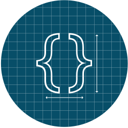
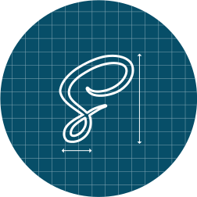
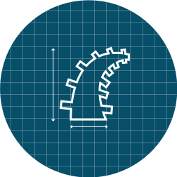
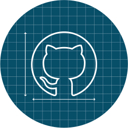
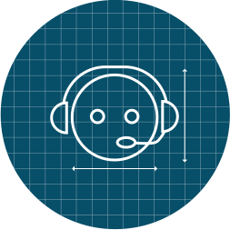

Second panel content goes here...
Getting Started
Getting started with Foundation is easy. Whether you are a master of Sass, building a new app, or making your existing site responsive, we've got you covered.
What is Foundation?
Foundation is the most advanced, responsive front-end framework in the world. The framework is mobile friendly and ready for you to customize it any way you want to use it.
Millions of designers and engineers use Foundation as part of their workflows. It was the first framework to introduce the concepts of responsive design, semantics, mobile first and partials. It's also compatibile with most browsers and devices. Foundation is the professional choice for designers and engineers.
What Are You Building?
We have three different packages to get you started:

Hack on CSS
Skill level
The straight CSS version is perfect if you want to just start writing code, rapid prototype, or building a simple, static site. We'll give you all the pieces you need, no setup required.

Customize with Sass
Skill level
Check out to get started with Sass (SCSS) to let you customize... well, everything. Setup is straight forward and if you haven't used Sass before, once you do, you'll never look back.

Build an App
Skill level
We use Rails to build our apps (Notable, Verify, Solidify, ZURB University, and the Foundation Forum) and you can too. We'll show you how to use the Foundation gem and get set up.
What Comes With Foundation?
Foundation has a ton of components and structures to help you build a responsive site without having to worry about all of your baseline, foundational (see what we did there?) code.
You can see all of Foundation's components on one page called the Kitchen Sink or check out a small snapshot of what Foundation includes:
The Grid
Our grid works on almost any device and has support for nesting, source ordering, offsets and device presentation. Frankly, it's a little too easy. In no time, you'll be creating complex layouts like this.
Need a head start on some of your designs or some extra inspiration to see the full potential of a responsive front-end framework? Check out a list of our Foundation resources!
12
6
6
6
6
4
4
8
4
3
9
4
3
3
6
Buttons
Clicking on stuff is awesome, so hook up your users with buttons to do stuff. There are some lightweight button styles for size, presentation, and color to make customizing your own button as easy as adding a class.
Navigation
People have to get around. Navigation styles in Foundation include: a robust top bar with dropdowns; button; search bars; a cool icon bar; a bitchin' off-canvas implementation; and a bunch of other navigational constructs.
Plugins
We've included a ton of JavaScript plugins written just for Foundation: pop-up modals (Reveal); add a required validation for forms (Abide); create content tabs; alerts; and tons more.
This is a modal.
Reveal makes these very easy to summon and dismiss. The close button is simply an anchor with a unicode character icon and a class of close-reveal-modal. Clicking anywhere outside the modal will also dismiss it.
Finally, if your modal summons another Reveal modal, the plugin will handle that for you gracefully.
×This is a second modal.
See? It just slides into place after the other first modal. Very handy when you need subsequent dialogs, or when a modal option impacts or requires another decision.
×First panel content goes here...
Third panel content goes here...
This is a round warning alert.
×
Test Drive Foundation
Want to give Foundation a quick spin? We've set up a Codepen where you can play around with the default Foundation download — HTML, CSS and JS. It's a pretty swanky way to just see what Foundation has to offer.
We put together a small demo to show you how easy it is to start creating with the Foundation Grid! We've used visibility classes, a medium grid, and even source ordering. You can play with this Codepen yourself. Go ahead and fork it, change it, enjoy it!
See the Pen Grid Example by ZURB Foundation (@ZURBFoundation) on CodePen.
We put together a small demo to show you how to use a visibility class to have a Top bar on medium and large screens and an off-canvas menu for small screens. You can play with this Codepen yourself. Go ahead and fork it, change it, enjoy it!
See the Pen Navigation Example by ZURB Foundation (@ZURBFoundation) on CodePen.
We put together a small demo to show you how to use a our forms. We have check boxes, input boxes, and so much more. You can play with this Codepen yourself. Go ahead and fork it, change it, enjoy it!
See the Pen Foundation Forms by ZURB Foundation (@ZURBFoundation) on CodePen.
We have a small demo to show off one our coolest features, Interchange! Take a look at the code, you can even play with this Codepen yourself. Go ahead and fork it, change it, enjoy it!
See the Pen fcFnq by ZURB Foundation (@ZURBFoundation) on CodePen.
Foundation Resources
Not enough to get you started? Think again. Check out all the cool things we've got for you.
Components
If you need tools to help get your project started? We have some templates we've put together, custom code snippets in our Building Blocks, and responsive tables. We can also help if you need icon fonts or social icons.
Development Tools
The Foundation community has put together free themes for WordPress, Drupal, Shopify, Jekyll, and more! Or if you're looking for Angular directives for Foundation, Sublime Text Snippets, or Clips for Coda we can help you out.
Inspiration
Looking for something to jumpstart your creative juices? We've got you covered with a fully Responsive Gallery, our ZURB University Lessons, updates on the ZURBlog, and a glossary of product design terms with ZURB Word.
See the full list of resources our community have put together. →
Our Community
Foundation has grown a lot over the years and whether you want to help others, contribute to Foundation, or even contact us to solve issues for your business, we know where you need to go.
Foundation Community
Join the Foundation Community in our very own Forum, come support your peers! Get your questions answered or learn something new. This is your portal to the community.

Foundation on Github
Want to contribute to Foundation's open-source framework? Submit a fix and be counted as a contributor. See an issue, report it on GitHub. Want to see what's coming up? It's all happening on GitHub.

Business Support
Foundation Business Support is here to keep you projects moving along smoothly. Whether it's a complex problem or a simple fix we have a solution for your business.